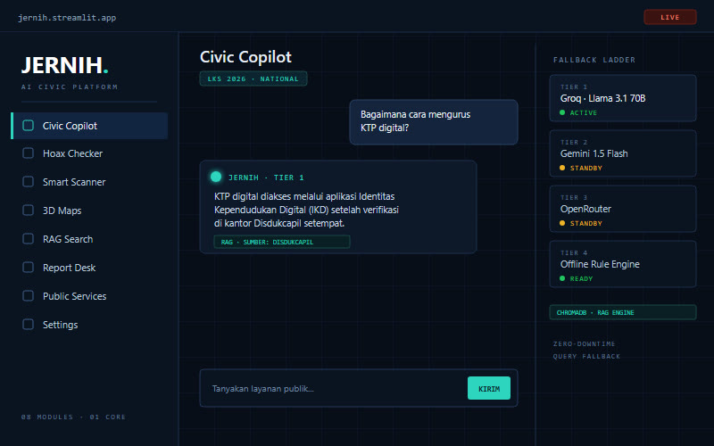
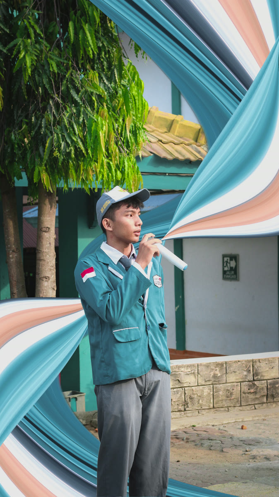
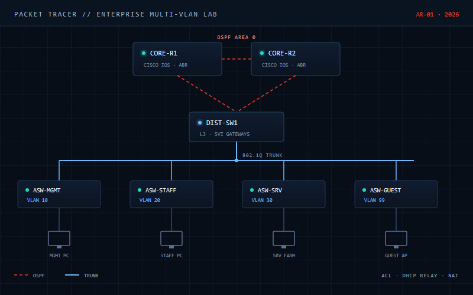
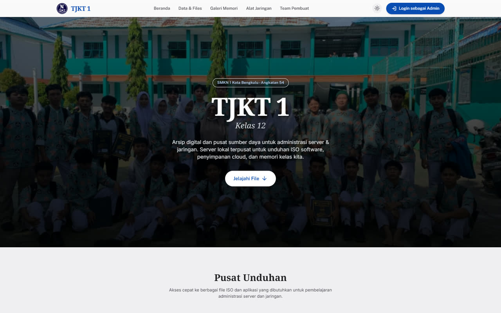

Adiel Radithya
Network Engineer & Cybersecurity Enthusiast
TJKT student at SMKN 1 Kota Bengkulu, focused on network infrastructure, cybersecurity research, and applied AI. Building toward resilient communications for mission-critical systems.
0
Featured Projects
0
Credentials
0
National Award
0
JERNIH Team
SECTION-01SIGNAL
Architecting resilient networks.

NAME
Adiel Radithya Putra Irwana
ROLE
Network & AI Engineering Student
STATUS
OPEN TO COLLABORATION
I study Computer Network and Telecommunications (TJKT) at SMKN 1 Kota Bengkulu, Indonesia. My work sits at the intersection of network architecture, cybersecurity, and applied AI — from multi-VLAN enterprise simulations to a national-award AI platform.
My long-term goal is to contribute to deep-space communications and mission-critical infrastructure: resilient protocols, satellite networks, and systems that keep working when conditions are not ideal.
MAJOR / TRACK
TJKT — Network & Telecom
FOCUS AREA
Network & Cybersecurity
BASED IN BENGKULU
UTC+7
SECTION-02SYSTEMS
Protocols, systems, and tools.
A working matrix of the tools and protocols I use to design, secure, and operate infrastructure — grouped by how they are applied.
CORE MATRIX04 SYSTEMS
Cisco Networking
Linux OS
Wireshark
Python
SAMPLE STACK04 TOOLS
HTML5
CSS3 Modern
JavaScript
Git & GitHub
SECTION-03DOSSIERS
Selected dossiers.
Real work across networking, applied AI, and infrastructure. Open any dossier for the architecture and challenge behind it.

PROJECT-01 · NETWORKING
Enterprise Network Topology
Multi-VLAN enterprise infrastructure with OSPF dynamic routing, DHCP relay, and access control policies, built in Cisco Packet Tracer.

PROJECT-03 · INFRASTRUCTURE
12 TJKT 1 Dedicated Server
Custom rack server assembly, RAID 1 storage, Linux deployment, and local DNS/web hosting for the Class 12 TJKT 1 lab environment.
SECTION-04MISSION LOG
Verified results.
Competition outcomes and industry credentials. Official references on file.
Mission log
01 ENTRY| YEAR | MISSION | ISSUER | STATUS |
|---|---|---|---|
| 2026 | LKS Dikmen 2026 — AI Exhibition 1st Place Bengkulu Province · National Rank #15 · Score 87.13 | Kemendikdasmen · Puspresnas | VERIFIED SK 1365/B/H3/PN.00/2026 |
Credentials
03 RECORDS| CREDENTIAL | ISSUER | STATUS |
|---|---|---|
| Networking EssentialsIP routing, IPv4/IPv6 subnetting, ethernet switching, troubleshooting | Cisco Networking Academy | VERIFIED |
| Cybersecurity FundamentalsSecurity principles, threat mitigation, firewall policies, encryption | Network Security Pathway | VERIFIED |
| Google IT SupportLinux administration, system diagnostics, IT support | Professional Certificate Track | IN PROGRESS |
SECTION-05 · VULNERABILITY DISCLOSURE
P1 · P2
Vulnerability research, disclosed responsibly.
Independently discovered and responsibly disclosed two Remote Code Execution vulnerabilities (rated P1 and P2) through NASA's official Vulnerability Disclosure Program.
NO EXPLOIT DETAILS PUBLISHED · REFERENCES AVAILABLE ON REQUEST
SECTION-06ORBIT
Astronomy Picture of the Day.
Live daily imagery from NASA's official open API.

LIVE NASA API FEED
Fetching cosmic data...
Connecting to NASA's open API to retrieve today's astronomical capture.
SECTION-07UPLINK
Send a return signal.
For collaboration, research, or opportunities — open a channel below.